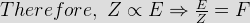

- Primary battery is such a battery
- The first electro - chemical cell was invented by
The first electrochemical cell was invented by Luigiri Galvani in 1791. It was greatly improved by Alessandro Volta in the year of 1800.
- The secondary battery is such a battery
A secondary battery cell is one in which chemical energy is converted into electrical energy but they do only when they are charged by passing electric current through them by some source.
- An example of secondary battery cell is
Voltiac cell, daniel cell, Lachanche cell, Bunsen cell, fuel cell are some well known example of primary battery cells. Whereas, lead acid cell and edison alkali cell are two well known example of secondary cells.
- Internal resistance of a battery cell increases with
Internal resistance of a battery cell
1. increases with increase in distance between two electrodes.
2. decreases with increase in concentration of electrolyte.
3. decreases with increase in area of the plates inside the electrolyte.
4. decreases with increase in size of the electrodes. - Internal resistance of a battery cell decreases with
Internal resistance of a battery cell
1. increases with increase in distance between two electrodes.
2. decreases with increase in concentration of electrolyte.
3. decreases with increase in area of the plates inside the electrolyte.
4. decreases with increase in size of the electrodes. - Unit of electro - chemical equivalent of the substance of electrolyte
According to Faraday's law of electrolysis,the mass (Δm) of ions liberated at an electrode is directly proportional to the quantity of charge (Δq) passing through the electrolyte.
Δm ∝ Δq ⇒ Δm = ZΔq ⇒ Z = Δm ⁄ Δq
This Z is proportionality constant and also called electro - chemical equivalent of the substance of the electrolyte.
From the above relation it is clear that unit of Z may be Kg / Coulomb [unit of mass ⁄ unit of charge]. - If Z is the electro - chemical equivalent of a substance of the electrolyte. E is the chemical equivalent of the same substance, then the relation between Z & E will be,
Faraday's second law of electrolysis states electro - chemical equivalent of a substance is directly proportional to its chemical equivalent.
- Negative electrode or anode of simple voltaic cell is made of
In Voltaic battery cell, zinc atoms in contact with dilute sulfuric acid give up electrons and forms Zn++ ions which pass into the electrolyte. As a result zinc electrodes get high concentration of electrons and it get negatively charged. Hence this zinc electrode acts as negative electrode or anode.
- For all substances, [chemical equivalent / electro - chemical equivalent] =
Faraday's second law of electrolysis states electro - chemical equivalent ( Z ) of a substance is directly proportional to its chemical equivalent ( E ).

F is a constant called Faraday's constant and value of F = 96500 Coulomb. - A 10 V battery with an internal resistance of 1 Ω is connected across a non-linear load whose v-i characteristic is given by 7i = v2 + 2v. The electric current delivered by the battery is
Under construction.
- Nickel is used in
The electrodes of a thermionic valve are generally made of nickel.
- A cell has an Ah efficiency of 80 %. It has an average terminal voltage on discharge and charge of 1.2 V and 1.6 V respectively. The Watt- hour efficiency of the cell is _______________________ %.
- Effect of temperature on internal resistance of a battery is
Due to presence of electrolyte internal resistance Ri is inversely proportional to temperature t.
- E.C.E stands for
E.C.E stands for elctro chemical equivalent (E.C.E) is the mass of ions in grams which is liberated /deposited by chemical action by the passage of 1 C of electricity i.e 1 A for 1 sec.
Design with  by SARU TECH
by SARU TECH
www.sarutech.com
Content Credited to electrical4u.com
Online Electrical Engineering Study Site